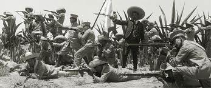

A la una de la mañana del 9 de Febrero de 1913, en la escuela militar de San Fernando, todo era movimiento: los jóvenes aspirantes habían recibido órdenes de los oficiales, para enlistarse de momento y marchar a la Capital de la República, disque a reprimir una asonada. Poco después de la hora mencionada, los artilleros del 2o Regimiento de guarnición en Tacubaya, despertaban al toque de diana. Escucharon la consigna de tomar equipo de combate y emprender salida rumbo a la Ciudad de México. Ambas corporaciones fueron escogidas por el Gral. Manuel Mondragón, está perfectamente probado que el menguado General fue el autor intelectual del cuartelazo del 9 de Febrero, el mismo individuo que prostituyó al ejército, mediante procedimientos arteros, a la deslealtad. Habiendo perdido el patrocinio del General Díaz, necesitaba encumbrarse por cualquier medio a un sitio gubernativo en el que el oro manara a raudales y le concediera todo el poder que años atrás había disfrutado.
Artilleros y aspirantes de la caballería, se presentaron muy de mañana frente a la prisión de Santiago, reclamando la liberación del General Bernardo Reyes. Dicha casa de reclusión militar fue incendiada en el transcurso de la mañana y muertos la mayor parte de los reos. Los astutos sublevados llevando a Mondragón y a Reyes a la cabeza, continuaron su marcha hacia la Penitenciaría, donde a fuego de metralla, lograron la libertad de Félix Díaz. Mientras se desarrollaban, los últimos sucesos, el Intendente del Palacio, Capitán de Navío Adolfo Bassó Méndez, se ponía en comunicación con el Ministro de la Guerra General Angel García Peña y con el Comandante Militar de la Plaza General Lauro Villar, para organizar la defensa de la residencia oficial del Ejecutivo.
Así fue como al las 7:20 a.m. dichos Generales a las órdenes del Coronel Juan C. Morelos; los mismos generales nombrados, procedieron a distribuir a leales en sitios estratégicos, con el objeto de repeler la agresión de los amotinados. Al presentarse estos, capitaneados por el General Reyes, fueron recibidos con nutrido fuego de fusilería. Los bravos García Peña, Villar y Bassó, disparaban certeros la dotación de sus revólveres. En los primeros momentos de la terrible refriega, perecieron el Gral. Bernardo Reyes, por una parte, y por la otra el Coronel Morelos. Heridos los Generales García Peña y Villar, la continuación de la defensa quedó encomendada al General José María de la Vega. Los aspirantes que ocupaban la Catedral depusieron las armas, poniéndolas a las órdenes del Supremo Gobierno; Félix Díaz y Mondragón, tomaron el rumbo de la Ciudadela.
Tan pronto como la noticia detallada del cuartelazo llegó a Chapultepec, residencia privada del Señor Madero, éste dispuso su violenta salida al lugar de los sucesos. Después de transmitir las órdenes más urgentes se encaminó a caballo hacia el Palacio Nacional, acompañado de sus hermanos D. Ernesto y D. Gustavo, del Ministro de Comunicaciones Ingeniero Manuel Bonilla y del Mayor López Figueroa. Formábanle escolta los alumnos del Colegio Militar.
Caminando por la Avenida Juárez a la altura del Teatro Nacional, una patrulla de revoltosos, disparó sus armas sobre el grupo que rodeaba al Ejecutivo, más con tal precipitación, sólo se tuvo que lamentar la desgracia de algunos heridos. Los revoltosos desaparecieron y la comitiva presidencial continuó su marcha por la Avenida de San Francisco llegando al fin, al Palacio, sitio en el que pocos momentos después se les reunieron la mayor parte de los Secretarios de Estado. Donde en Consejo extraordinario se llegó a las resoluciones siguientes:
Enviar a la Ciudadela al Mayor López Figueroa pidiendo la rendición de los rebeldes. Detenido éste por los sublevados, lo sustituyó en la Inspección de Policía el Mayor Benjamín Camarena.
Suspender el servicio particular de telégrafos para el interior y el telefóno suburbano. Llamar al General Vasconcelos, al traidor Blanquet de Toluca,a Medina Barrón, al 30 Batallón situado en Teotihuacán, al numeroso cuerpo de voluntarios que comandaba en el Estado de Puebla el Coronel Ocaranza y por último, a Rubio Navarrete.
El Presidente deseando sofocar la rebelión salió a las 2 de la tarde para Cuernavaca, regresando el día 10 con el General Angeles, Gobernador de Morelos. Sin darse punto de reposo asistió a una junta de Guerra a la que concurrieron Cauz, San Ginés, Delgado, Angeles, Mass, el Coronel Castillo y el Judas de ese cenáculo Victoriano Huerta. En dicha junta se decidió el plan de combate que se desarrollaría al día siguiente.
En la mañana del 11 se emprendió el ataque a la Ciudadela. A las diez de la mañana la ciudad escuchó el primer cañonazo felicista. Dicho disparo señaló el principio del gran combate que duró ocho días que parecieron eternos.
De acuerdo con el plan, cuatro poderosas columnas atacaron simultáneamente a la fortaleza infiel: por el norte el General Cauz, por el sur el Gral. Mass y hacia el oriente y oeste las comandadas por los generales José M. Delgado y Felipe Angeles.
Huerta, a quien se había otorgado el mando superior del Ejército, mandó debilitar dichos puntos hasta que al fin fueron abandonados en manos enemigas.
Cerca del mediodía del 18, el Presidente Francisco I. Madero asistido por sus Ayudantes, celebraba acuerdo con algunos de los Secretarios de Estado. (Cuan lejos estaba de que momentos antes, Huerta en connivencia con Blanquet, Mass, Yarza, Rubio Navarrete, Garcia Hidalgo, etc. había determinado agregar al cuartelazo del 9 otro más inícuo). Presentáronse de improviso el Teniente Coronel Jiménez Riveroll y el Mayor Izquierdo con gente del 29 intimando en nombre del Ejército la prisión del Sr. Madero. El impasible funcionario en contestación disparó su revólver sobre el sayón. Y como si se tratara del suceso más natural, salió al balcón a arengar a la guardia, ignorando que ésta había sido sustituida con hombres del fatídico Batallón citado. Descendió en seguida por el elevador al patio de honor en donde ya lo asechaba Blanquet, quien pistola en mano lo hizo prisionero.
Simultáneamente fueron aprendidos el Vicepresidente y la mayor parte de los Ministros, haciéndose otro tanto con don Gustavo Madero en compañía de los Generales Francisco Romero y José Delgado.
Conseguido el aseguramiento de las primeras personalidades del Gobierno, el plan de los traidores pudo desarrollarse en lo de adelante sin el menor tropiezo.
Se llevó a cabo en el resto del día la persecución contra algunos diputados del grupo "renovador", contra los principales líderes maderistas y contra los politicos más connotados del régimen que se trataba de derrocar; iniciáronse, al mismo tiempo, los preliminaresdel convenio, baldón de nuestra historia, conocido con el nombre de "pacto de la Ciudadela". Las bases de éste nuevo Tuxtepec, fueron firmadas por Huerta y Félix Díaz, asesorado el primero por Mass y el ingeniero Cepeda y el segundo por los licenciados Fidencio Hernández y Rodolfo Reyes. Se intentaron, además, los primeros trámites para obtener la renuncia de los CC. Presidente y Vicepresidente de la República. Las renuncias de los señores Madero y Pino Suárez fueron llevadas, al fin, a la Cámara y discutidas en la sesión de la tarde del 19, aprobadas por mayoría: La del Sr. Presidente por 123 votos contra la opinión de los viriles ciudadanos Escudero, Pérez, Rojas, Alardín y Hurtado Espinoza y la del Vicepresidente por 118 votos afirmativos contra 10 de la negativa. ¡La traición fue consumida y la ambición satisfecha!
Los ilustres prisioneros fueron confiados primeramente en uno de los departamentos de la Comandancia Militar y trasladados, después a los de la Intendencia del Palacio. Allí permanecieron hasta el día 22, en que sacados de su celda fueron conducidos al sacrificio. ¿Cómo fue éste?
La versión oficial de todos conocida, lo relató de un modo tonto y perverso; la voz de la calle lo refirió, aproximándolo a la verdad, de mil maneras diversas, y el sicario Francisco Cárdenas que lo ejecutó, lo describe en una de sus declaraciones en la forma siguiente:
Ese día como a las seis de la tarde, me mandaron llamar a los salones de la Presidencia y hablé con mi General Mondragón, quien me dijo: "Sabemos, Cárdenas, que usted es hombre y sabe hacer lo que se le manda. El que mató a un Santanón, debe con facilidad matar a un Madero." El General después de escuchar mi contestación afirmativa, me indicó que podría retirarme y que estuviera listo con mis hombres, escogiéndolos de confianza, pues el primero que dijera una frase de lo que se iba a hacer sería fusilado.
Como a las ocho y media de la noche y cuando ya tenía mis hombres listos, se me mandó llamar por el mismo General Mondragón, quien me ordenó que sacásemos a los Señores Madero y Pino Suárez de los alojamientos donde se encontraban y los lleváramos a la Penitenciaría para que allí, en uno de los patios, procediéramos a su ejecución. Despues de recibida esta orden, yo y mis hombres nos dirigimos a tomar a los reos del lugar en que se hallaban. El Señor Madero incorporándose, me dijo encolerizado: "Qué van a hacer conmigo, cualquier atropello que se haga, no será a mí sino al Primer Magistrado de la Nación". Nada contesté, me limité a poner al Presidente entre los rurales y poco después hacía lo mismo con el Licenciado Pino Suárez quien no protestó, pidiendo solamente se avisara a su familia sobre el sitio a donde se le llevara.
Salimos yo y mi gente con los prisioneros, cuando al pasar por uno de los pasillos que hay en el patio de honor, el Sr. Madero protestó con energía y hubo un momento en que dio un bofetón en el rostro a uno de los guardias que estaba más cerca de él. Los gritos de protesta continuaban y entonces me apresuré a participarlo al General, comprendiendo que era expuesto sacarlo de allí con escándalo. En uno de los salones de la Presidencia, creo que fue en el Amarillo, me encontré a los generales Victoriano Huerta y Manuel Mondragón, así como a otras personas que no conocía y en seguida expuse lo que pasaba. Mi General Mondragón mesándose con ira los cabellos, se levantó de su asiento y me dijo: "Llévelos a una caballeriza y allí los remata." Esta orden la aceptaron las personas que con él estaban, agregando Huerta esta frase: "Lo que ha de ser.... que sea". Esperaba nuevas órdenes cuando el General Mondragón, encolerizado, exclamó: "Sobre la marcha"; luego salí de allí y poco después entrábamos a una de las caballerizas. Los prisioneros, al ver aquéllo, comprendieron lo que les esperaba y protestaron con frases duras para mi General Huerta. Más como la orden tenía que cumplirse, a empellones los hice entrar al interior de la caballeriza donde los puse al fondo para que mis muchachos tiraran. El Vicepresidente fue el primero que murió, pues al ver que se le iba a disparar comenzó a correr, di la orden de fuego y los proyectiles lo clarearon hasta dejarlo sin vida, cayendo sobre un montón de paja. El Sr. Madero vio todo aquéllo y cuando le dije que a él le tocaba, se fue sobre mí, diciéndome que no fuéramos asesinos, que se mataba con él a la República. Yo me eché a reir y cogiéndolo por el cuello, lo llevé contra la pared, saqué mi revolver y le disparé un tiro en la cara, cayendo en seguida pesadamente al suelo. La sangre me saltó sobre el uniforme.
Muertos los dos, así lo participé al General Mondragón, quien metió la mano al bolsillo y me dio un rollo de billetes agregando: "Eso es para usted y su gente". Después los pusimos en el automóvil y al llegar a las calles de Lecumberri, bajé a mis guardias y ordené que dispararan sobre el vehículo. Los muchachos así lo hicieron y poco después entregué los cadáveres al director de la Penitenciaría.
¡Baldón para el menguado que esgrimió el arma homicida!
¡Maldición eterna para los directores intelectuales de tamaño delito!
Venustiano Carranza desconoce al Usurpador Victoriano Huerta el 19 de Febrero de 1913 y sabiendo que ya está en Coahuila el Tte. Corl. Pablo González, sale hasta entonces de Saltillo y es en la Hacienda de Guadalupe donde proclama El Plan de Guadalupe el 26 de marzo de 1913, bajo la protección y el amparo del Tte. Corl. Pablo González, que se bate heróicamente en Monclova, en Candela, en Lampazos, en Bustamante, en Gloria, en Aura, contra poderosas fuerzas federales huertistas de los Generales Joaquín Mass y Guillermo Rubio Navarrete.
El Plan de Guadalupe es un documento sencillo, severo; expresa con admirable precisión la finalidad intrínsica de la lucha que empieza; por eso fue la resolución correcta del orden social y político porque ya no era posible mediante el sistema de súplicas y ruegos que nadie oiría, sino como lo comprendió el Gobernador Venustiano Carranza, tenía que ser un problema antes que todo, escencialmente militar. Fue por esto que, para acabar radicalmente con el régimen de la usurpación, fue indispensable que surgiera avasalladora La Revolución Constitucionalista.
El Gral. de División, don Pablo González Garza en uniforme de campaña cuando comandaba un ejército de poco más de 100 mil hombres.
Para ello Don Venustiano Carranza cuenta en su inmensa labor de preparación y para llevar a feliz término la campaña, con el contingente de muy valiosos elementos en el orden civil y militar, entre ellos ostensiblemente figuró la relevante personalidad del entonces Teniente Coronel Pablo González Garza, de notables rasgos morales que reveló al hombre conciente de sus deberes, de méritos indiscutibles conquistados en campaña muy comentada por su eficacia y actividad, que fueron motivos justificados para que el Primer Jefe del Ejército Restaurador Constitucionalista lo ascendiera al grado inmediato de Coronel. Y después don Pablo González ganó bien sus insignias de General Brigadier, luego de Brigada, y por último de General de División, convirtiéndose en Magnífico organizador, en El Brazo Derecho de Carranza, y en General en Jefe del Cuerpo de Ejército del Noreste, luego del Oriente, siendo su lealtad a la causa y su aguerrida actividad el que obtuvo para Venustiano Carranza y el Constitucionalismo el triunfo sobre el Usurpador Victoriano Huerta y no Alvaro Obregón, y sobre el traidor hipócrita agrarista Emiliano Zapata; siendo además, a el General Pablo González Garza a quien don Venustiano Carranza debió alcanzar la Presidencia de la República y hacer posible que se Promulgara la Constitución de 1917.

.jpg)